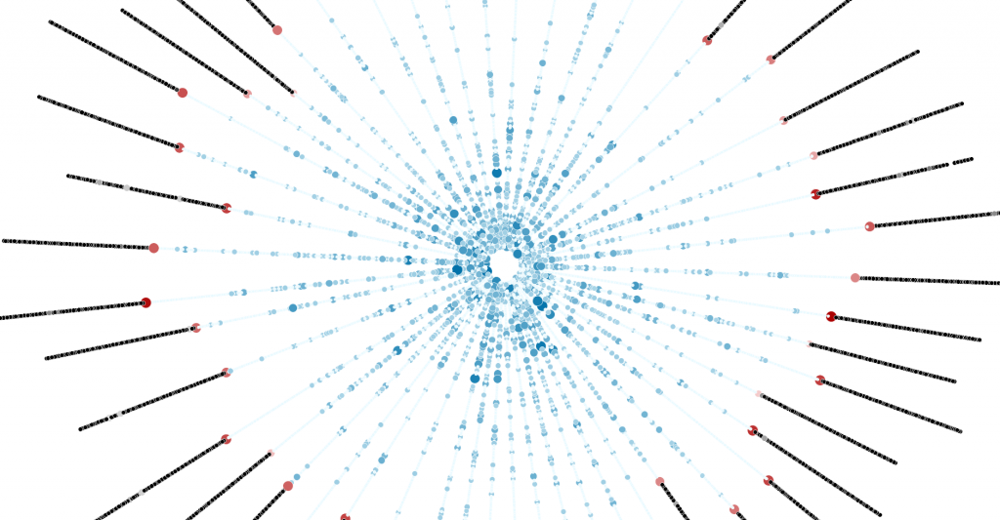

This is the second bad captcha I’ve had to deal with on the form I’m filling out. Captcha and other methods of assessing the humanity of Internet communication likely have enough material for several PhDs. I think we’d all be better off if captchas were replaced with questions of aesthetic beauty to confirm or deny one’s humanity.

To continue with your download, please write a sonnet describing this image.